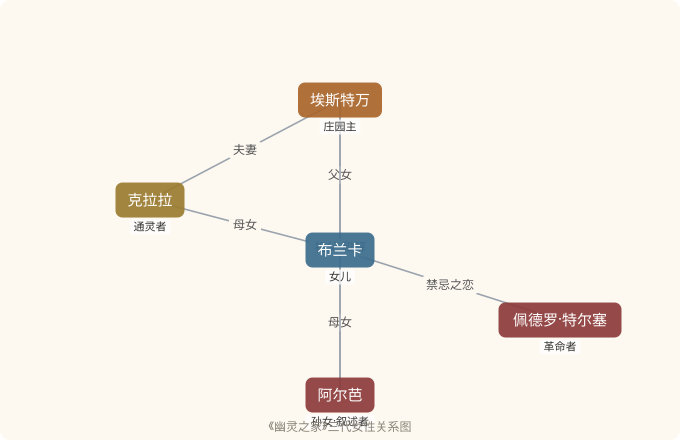

幽灵之家
一、基本信息
| 作者 | 阿连德 |
|---|---|
| 成书/出版 | 1982年出版（Britannica） Isabel Allende — Encyclopaedia Britannica（百科全书） |
| 国别/地区 | 智利 |
| 时代 | 现当代 · 20世纪 |
| 体裁 | 长篇小说（魔幻现实主义家族史诗） |
| 语言 | 西班牙语 |

《幽灵之家》三代女性关系图（人物关系图）
二、创作背景
创作（Britannica）：源于1981年给临终外祖父的信（Britannica：grew out of a 1981 letter to her dying grandfather）——'亲爱的祖父，你还在那里……'（开篇原文意，通说待核）——以'记录'为动机的家族史。
故事背景（通说）：智利1920s—1970s——特鲁埃瓦家族三代女性与1973年皮诺切特政变（salvador Allende 的侄女？——非直系，通说待核）。
三、内容脉络
第一代：埃斯特万·特鲁埃瓦——庄园主、脾气暴躁——与妻子克拉拉（通灵者——'能听见死人说话'）建立'三姐妹'家庭（通说）。
第二代：布兰卡（女儿）与革命者佩德罗·特尔塞的爱情——政变的种子（通说）。
第三代：阿尔芭——'最后一个'——1973年政变后的监禁与'幽灵之家'手稿的完成（通说）——'记忆的书写对抗遗忘'（通说解读）。
四、主要人物表
| 人物 | 身份 | 说明 |
|---|---|---|
| 埃斯特万·特鲁埃瓦 | 庄园主 | ' patriarch'——暴力与悔恨的保守派 |
| 克拉拉 | 妻子·通灵者 | '幽灵之家'的'幽灵'与明灯 |
| 布兰卡 | 女儿 | 与革命者佩德罗的禁忌之爱 |
| 阿尔芭 | 孙女·叙述者 | '记忆的书写者'——以写作对抗遗忘 |
五、主题与艺术特点
- 记忆与遗忘：政变后的'官方遗忘'对抗'家族记忆'（通说）。
- 女性的生存：三代女性的坚韧与超越（通说）。
- 魔幻与现实：通灵、预言、灵魂——拉美魔幻传统的延续（通说）。
- 艺术特点：日记/手稿/书信的拼贴、'记忆书写'的元叙事。
六、影响与评论
- Britannica（Allende 条）：The House of the Spirits (1982)——首作与国际成名作。
Isabel Allende — Encyclopaedia Britannica（百科全书） - 1993年丹麦导演 Bille August 电影（Streep/Castellano——通说待核）。
Isabel Allende — Encyclopaedia Britannica（百科全书） - 中译：刘习良等译《幽灵之家》（云南人民出版社，通说待核）。
Isabel Allende — Encyclopaedia Britannica（百科全书）
七、阅读建议
难点
- 三代人物众多——家谱图。
- 1973年智利政变史——注释。
- 刘习良、笋季英译《幽灵之家》（云南人民出版社，通说待核）。
- 英译：Magda Bogin（通说待核）。
通读 → 精读政变与阿尔芭段落 → 对照《百年孤独》的家族史诗传统。
八、待核实
- 1982年 Plaza & Janés（Barcelona）出版细节待核。
- 刘习良译本信息待核。
- 1993年电影改编待核。
- 阿连德家族与总统的关系待核。
本页主要来源
阿连德的其他收录作品：幽灵之家